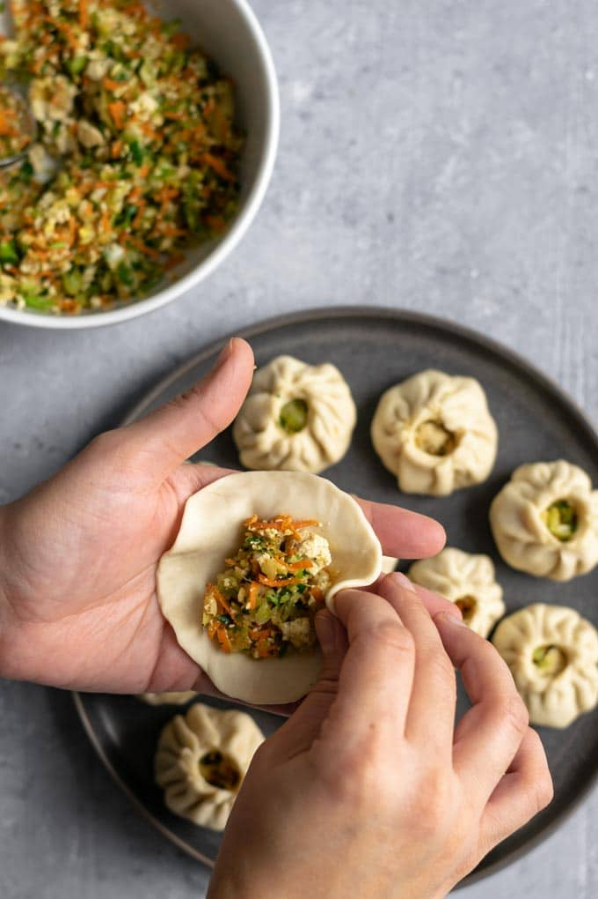
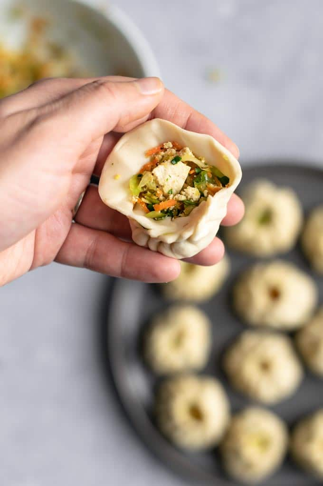

Among the different varieties of Nepali food available, momo is one of
the most popular items. In fact, momos are so popular in Nepal that
almost every restaurant offers it on their menu.There are three steps to
making momo: you will first need to prepare fillings, then the wrappers,
and finally you can cook them. In this article, I'm going to teach you
the authentic way to make delicious momo at home, all by yourself.
To make delicious momos, start by adding one grated onion to the
minced meat. Then, add half a tablespoon of turmeric powder to give
the meat a bit of color. Next, add two tablespoons of salt to enhance
the flavor of the filling. If you want your momos to be spicy, you can
add a bit more of the two tablespoons of grated chili. Additionally,
add two tablespoons of ginger and garlic paste each to give the
filling a tasty flavor. For a sour taste, add half a tablespoon of
coriander powder to the mixture. After adding the spices, mix them
well with the meat. To prevent the filling from getting too dry, add
two tablespoons of vegetable oil and mix it again. Nepalese people
love their momos with juicy fillings. Lastly, add some finely chopped
coriander to the mixture and mix it well. With these steps, your momo
filling will be delicious and flavorful.
2. Making the momo wrappers


Making wrappers is easier than making the fillings or even the cooking
part and it's fun too! Start by putting the flour into a bowl. To make
the momo wrappers, start by putting flour into a bowl. Gradually add
water to the flour, a little at a time, to make dough. Knead the dough
for a few minutes to make it pliable and easier to use. Once the dough
is ready, pinch off a bit of it depending on how big you want the
wrapping to be. Then, take a rolling pin and roll the dough as thinly
as possible, into circular shapes that are the size of a glass. Be
sure not to make them too thin or too thick.
3. Cooking the momo
Now comes the most difficult part: packing and cooking the momos! Take
a piece of the momo wrapping and put around one tablespoon of filling
into the center of it. Then, pinch one edge of the wrapping to the
other edge and twist it. Keep doing this until the filling is fully
covered and make sure that the wrapping completely covers the filling.
Otherwise, the momos may break when steamed.
After wrapping the momos, oil the bottom of the steamer. This prevents
the momos from sticking to the steamer. Next, put the momos in the
steamer in a systematic order so that they don't touch each other.
Finally, steam the momos for 20-30 minutes, or until they are fully
cooked. Once cooked, serve the momos hot with some spicy sauce or
chutney. With these simple steps, you can make delicious and perfectly
steamed momos at home.